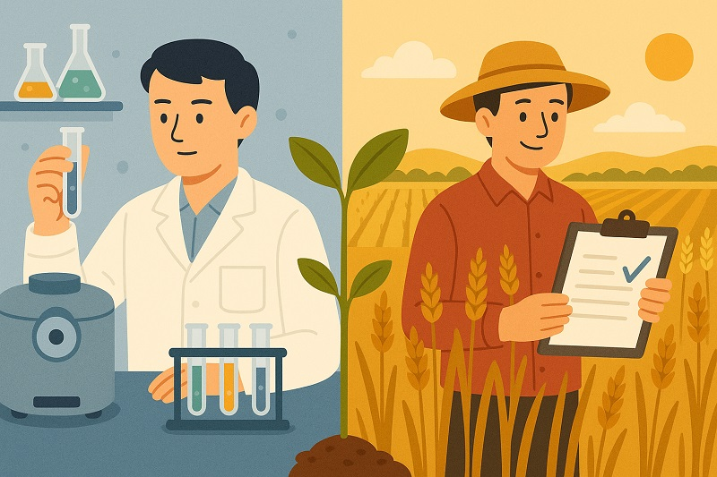

Nat. Plants | 🌾重新思考田间试验：实验室之外的“冒险之旅”
近年来，农业科研的进展简直像开了挂！各种“高产”“抗病”的神奇基因层出不穷，论文标题一个比一个炸裂。但你有没有想过——这些在温室里表现出色的基因，真的能在风吹日晒的田间表现同样出色吗？
这不是杞人忧天，《Nature Plants》5月的一篇社论就提出了一个很现实的问题：科学论文到底要不要强制包含田间试验数据？

🧪实验室强，田里就一定强？
说起来有点尴尬，很多论文里说某个基因能大幅提高作物产量，但真要放到地里一试，效果就不一定那么“神”了。毕竟，产量这种东西，本来就是受很多因素影响的“复杂性状”。
社论提到，过去一些研究可能高估了个别基因的作用，因为它们没有经过田间环境的考验，或者说——压根儿没下地。
🚜田间试验，真的那么难吗？
说实话，还真不容易：
- 没钱：田间试验贵啊！还要不同地点、多年重复，普通实验室根本负担不起。
- 没地：城市里的科研机构上哪儿找大片试验田？
- 没时间：一个研究从立项到发表，等不及三年五载地里慢慢测。
- 跨国合作难：比如中国科研人员要在美国做田间试验？难度不小。
- 法规严：在欧洲，小麦转基因下地试验要走一堆审批流程，劝退一大批人。
🌍不同国家、不同作物，田间“门槛”不一样
社论提到一个很有趣的现象：同样是抗病基因，小麦研究常在温室里测，玉米和水稻却常有田间数据。
为什么？可能跟小麦基因组太复杂有关，也可能是欧洲监管太严，让研究人员干脆放弃下地。反过来，中国很多研究都会配田间试验，这是因为国内基金和政策越来越强调“应用导向”，说白了就是：你研究的东西能不能真的用上？
🍅有些时候，也不一定非得下地
并不是所有研究都必须田间试验，比如：
- 🍅 番茄这种蔬菜主要温室种植，在温室测也合理；
- 🎨 种子颜色这类高遗传力性状，环境影响小，田间试验意义不大；
- 🧬 如果研究的是分子机制，而不是直接强调“能大幅提升产量”，也不必强求。
期刊编辑表示：我们会根据研究内容、社区标准和审稿人意见决定是否需要田间数据，不是一刀切。
✅那我们应该怎么做？
从科研人员角度来看，社论提出了一个非常中肯的建议：要明确地告诉读者：你的数据来自哪里，是田里、温室还是气候室？
如果你要说“我们这个基因超牛，在田里产量翻倍”，那就必须有田间试验来撑腰。否则就有“夸大宣传”之嫌。
🧠最后说几句
田间试验难做，但不能因为难就放弃。如果我们希望科研成果真的能走出实验室、走进田野，那田间试验就是那道“最后一关”。
当然，这不意味着每个研究都非得下地不可，而是要在科学价值与现实可行性之间找到平衡。毕竟，不是所有的冒险都值得，但有些冒险——像田间试验这样的——也许正是科研成果落地生根的关键一步。
此博客文字和图片均由ChatGPT创作
📌 参考阅读